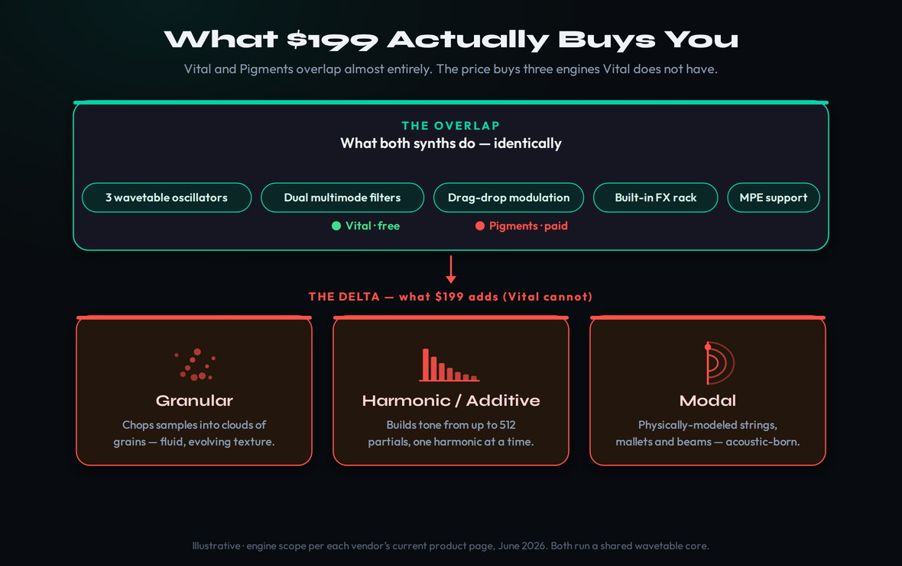
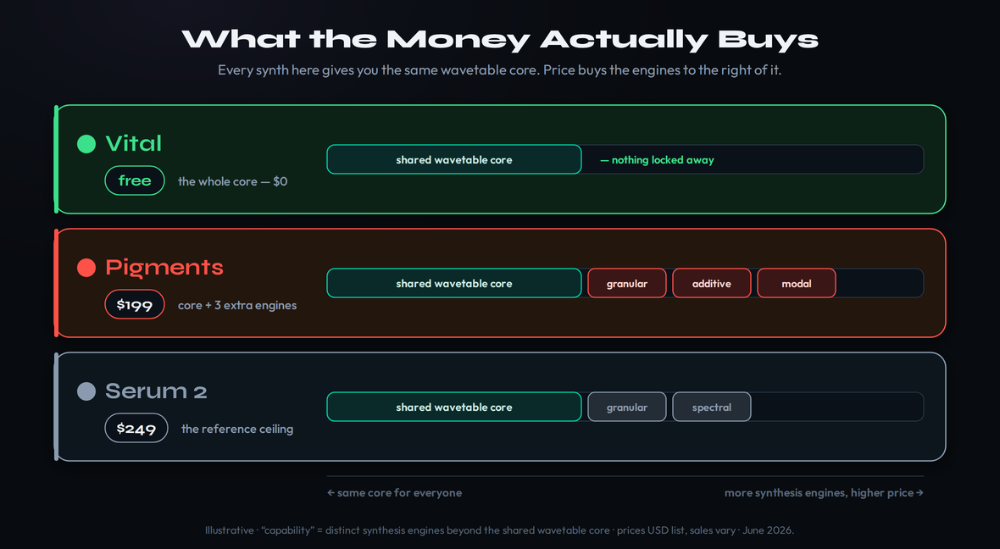
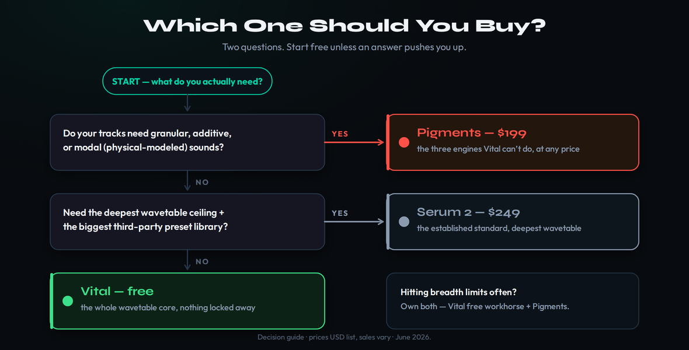

The short answer
Vital and Pigments overlap almost completely — both are wavetable-first synths with elite drag-and-drop modulation, dual filters, full effects and live visual feedback, and both make professional records. Pigments’ $199 buys exactly three things Vital cannot do at any price: granular, harmonic (additive) and modal (physical-modeling) synthesis. If you need those engines, Vital can’t get you there. If you don’t, you’re paying for a workflow preference. Most producers should start on Vital free and let a real bottleneck — not FOMO — make the upgrade decision.
Stop Comparing Feature Lists. The Overlap Is Almost Total.
Search “Vital vs Pigments” and you’ll get the same article five times: a tour of each synth’s engines, a note that Pigments runs warmer while Vital runs cleaner, and a shrug of a verdict — different philosophies, you’ll probably end up with both. It is all true and it helps you not at all, because it never answers the only question you actually have: you already own Vital, it’s free, it sounds great — so what does spending $199 on Pigments actually get you that you don’t already have?
Here’s the honest framing nobody puts up front. These two instruments are far more alike than the feature tables suggest. Both are built on wavetable synthesis. Both give you three-plus oscillators, a sampler, two multimode filters, a deep modulation matrix, a full rack of built-in effects, MPE, and a real-time animated interface that shows you what every LFO and envelope is doing. A producer dropped blind into either one, told to make a supersaw lead or a Reese bass or an evolving pad, would build the same sound in either and reach for the same controls to do it. One longtime user on the VI-Control forums put the overlap bluntly: roughly ninety percent of what Pigments can do, Vital can do too — the real differences come down to a handful of oscillator types Vital simply doesn’t have.
That is the whole decision, and it’s why a feature tour is the wrong tool. The right question isn’t “which synth is better” — on the things they share, they’re a coin flip, and a coin flip where one side is free. The right question is narrow and answerable: do you need the three engines that live only in Pigments? Answer that and the $199 decides itself. This guide is built to answer exactly that, in order: first we’ll prove how total the overlap is, then we’ll put each of the three Pigments-only engines under the light so you can decide whether any of them is a tool you’d actually use, and then we’ll score it honestly and tell you who should buy which.
What Both Synths Do, Identically
Before you can judge the difference, you have to see the sameness, because the sameness is most of synthesis. Start with the oscillators. Vital gives you three wavetable oscillators plus a sampler/noise oscillator, each with its own wavetable position, unison, phase and pitch controls, and a 2D/3D display that shows the table morphing as you scan it. Pigments’ wavetable engine does the same job with the same morphing-through-a-stack-of-waveforms logic. If your sound starts with “scan a wavetable and modulate the position,” you are doing identical work in either synth.
Modulation is the part producers fall in love with, and it’s a wash. Both synths use drag-and-drop routing: grab an LFO, envelope or macro, drop it on any parameter, and set the depth inline with a visible ring or bar. Vital’s color-coded sources and Pigments’ reactive routing both make a complex patch legible at a glance, and both animate every movement in real time so you can see the filter open and the LFO breathe. This is the single biggest reason either synth is a great place to learn synthesis: you don’t just hear the envelope snap, you watch the curve hit its peak. Neither has a meaningful edge here.
Two more shared strengths deserve a mention, because a spec table flattens them. First, macros: both synths give you a row of macro knobs you can map to a dozen parameters at once, so “open up” or “dirtier” becomes a single performable, automatable control — the backbone of an expressive patch. Second, audio import: both let you drag your own sample in as an oscillator source and then modulate and mangle it. The practical upshot is blunt: a huge amount of what producers call “sound design” — macro-driven movement, imported textures, layered oscillators, modulated filters — is fully available in the free synth. You are not buying those techniques when you buy Pigments. You already own them.
The shaping stages match up too. Both give you two multimode filters with a deep menu of types — ladders, comb, formant, the usual analog-modeled suspects — and flexible series/parallel routing. Both ship a complete built-in effects section: reverb, delay, chorus, flanger, phaser, distortion, compression, EQ, reorderable so your signal chain bends to your taste. Both support MPE for per-note expression and both let you import your own audio. Pigments layers more on top — a generative sequencer, more filter models, more effects slots — but the core a producer touches on a normal day is the same instrument wearing two skins.
This is the picture worth holding in your head: a wide band of shared capability that covers the overwhelming majority of what you’ll ever ask a synth to do, and then a narrow strip of extra engines that only one of them has. The free synth covers the band. The $199 synth covers the band and the strip. Everything that follows is about that strip.

Engine One: Granular — The Texture Machine
Granular synthesis is the first thing Pigments does that Vital flatly cannot. The idea is simple and the results are not: the engine slices a sample into tiny fragments called grains — milliseconds long — and then sprays, stretches, reverses and reorders those grains across time. Instead of playing a sample back as a sample, you play back a cloud of it. Pigments gives you real control over that cloud: grain size, density, position, pitch, direction, left-right spread, and clock-syncable density with per-grain probability, plus shaper modes like bitcrush, FM and ring mod on the grains themselves.
What does that buy you in a track? Texture that doesn’t exist in wavetable synthesis. Feed Pigments a vocal phrase and you can freeze it into a shimmering, breathing pad that still carries the ghost of the words. Feed it a field recording — rain, machinery, a creaking door — and granular turns it into an evolving atmosphere you could never draw as a wavetable. This is the engine film composers and ambient producers reach for when they want sound that feels organic and alive rather than synthesized. It’s the difference between a pad that sounds made and one that sounds found.
Can you fake any of this in Vital? Partly, and it’s worth being honest about the gap. Vital’s sampler oscillator plus its spectral warping can smear and mangle audio in genuinely creative ways — you can get evolving, glitchy textures out of it. But that is processing a sample, not granulating it; you don’t get a true grain cloud with independent control over density and grain envelope. If your music lives on granular texture — ambient, cinematic scoring, sound design, experimental electronic — this single engine can justify the whole purchase, because there is no preset pack and no clever Vital trick that fully replaces it. If your music doesn’t, this engine is a beautiful tool you’ll open twice and forget.
Here’s the tell for whether you’d actually use it. Pull up the last three tracks that made you stop and wonder how they made that sound. If the answer for any of them is a shimmering, pitched-down vocal wash, a frozen pad that seems to hang in the air, or a rhythmic stutter built from a found recording, you were hearing granular synthesis — or something close enough that granular is how you’d build it. Those textures are everywhere in modern scoring, lo-fi, ambient and the cinematic end of pop. If they’re in your references, the granular engine isn’t a luxury; it’s the missing tool that has been making your own attempts sound thinner than the records you’re chasing.
Engine Two: Harmonic — Additive From the Ground Up
The second engine Vital doesn’t have is harmonic, or additive, synthesis — and it works in the opposite direction from everything else in the synth. Subtractive and wavetable synthesis start with a rich, harmonically busy waveform and carve it down with filters. Additive starts from silence and builds the tone one harmonic at a time, stacking individual partials — Pigments gives you up to 512 of them — until the timbre exists. You’re not sculpting a sound; you’re assembling it from its atoms.
The practical payoff is a class of tones that are hard to reach any other way: glassy bells, pure sine-stacked pads, organ-like timbres, metallic and inharmonic textures where you place partials off the natural harmonic series on purpose. Pigments lets you randomize partials, modulate them, and run phase-modulation tricks across the harmonic engine, so “additive” here isn’t the cold, academic exercise it can be in dedicated additive synths — it’s playable and it moves. For producers doing cinematic, ambient or more experimental work, it’s a genuine third color alongside wavetable and analog.
Now the honesty this guide promised: harmonic is the Pigments-only engine the fewest producers will miss. Plenty of additive-flavored sounds — bells, glassy pads, clean sine stacks — can be approximated in Vital by stacking detuned oscillators, picking the right wavetables, and leaning on spectral warping to thin out or reshape the harmonics. It won’t be true partial-by-partial additive, and a trained ear building complex inharmonic timbres will feel the ceiling, but for most pop, EDM and hip-hop work the absence of a dedicated additive engine is not the thing that will hold your record back. Weigh this one by whether the words “512 partials” make you lean in or glaze over.
Engine Three: Modal — Physical Modeling
The third and newest engine — added back in Pigments 5, not version 7, despite what half the internet will tell you — is modal, and it’s the most different of the three. Modal synthesis is physical modeling: instead of generating a waveform, it mathematically models how a physical object resonates when struck or bowed — a string, a metal bar, a wooden beam, a membrane. You set the material, the geometry and how it’s excited, and the engine produces the sound that object would actually make. It is acoustic-born synthesis, and it sounds like it.
This is where Pigments reaches timbres that are categorically outside Vital’s world: struck mallets that decay like real wood, plucked strings with believable body, metallic and bell-like resonances that ring with physical character, and hybrid sounds where you excite an “impossible” object — a glass beam, a string the size of a building. For anyone scoring to picture, building organic percussion, or chasing the current taste for acoustic-meets-synthetic textures, modal is the engine that does something no wavetable synth pretends to.
The most useful place to put modal to work is percussion and hybrid hits. Dial in a struck metal bar or a wooden mallet and you have organic, slightly imperfect percussion that sits in a mix the way static sampled one-shots often don’t, because every strike can vary. Layer that modal resonance under a conventional synth tone and you get the “real instrument that doesn’t exist” quality behind a lot of current trailer and hybrid-orchestral scoring. None of it is reachable in Vital, and that is the point of naming it honestly: modal is narrow, but inside its lane it does something no amount of wavetable cleverness imitates.
And the trade-off, again stated plainly: modal is the most specialized of the three, which means it’s the easiest to over-value when you’re justifying a purchase. It is genuinely brilliant and genuinely niche. A dedicated physical-modeling instrument will go deeper, and a lot of producers will admire the modal engine in the demos and then never build a patch with it in anger. If physically-modeled, acoustic-inspired sound is core to what you make, modal alone can tip the decision — you’re effectively getting a whole extra synthesis discipline folded into the package. If it’s a curiosity, count it as a bonus, not a reason.
The Catch: CPU, Overwhelm, and the Sound Question
If the three engines were the whole story, this would be an easy “buy Pigments if you can afford it.” They’re not, and an honest comparison has to put the friction on the table. Start with CPU, because both synths will punish a weak machine. These are GPU-animated, deeply modulatable instruments, and that horsepower has a cost. Pigments has earned a real “freeze your tracks” reputation — stack two engines with heavy modulation across a busy session and you will hear your fans spin up — though version 7 brought measurable CPU improvements that take some of the edge off. Vital is no featherweight either, with one quirk worth knowing: its on-screen CPU meter often looks more alarming than the actual load, and simply closing the plugin window can free up real headroom on slower computers. Plan to freeze or bounce your heaviest patches in either one.
One difference the spec sheet hides is where your presets come from, and it cuts both ways. Pigments arrives with roughly 1,700 factory presets and sits inside Arturia’s ecosystem, so expansion banks and tight integration with Analog Lab and Arturia hardware are a click away — if you live in that world, it’s a real convenience. Vital’s factory library is smaller, but it has something Pigments doesn’t: a sprawling free community. Because Vital is free and its patch format is open, there are enormous libraries of free and cheap third-party presets and wavetables circulating on producer forums and Discords. Neither approach wins outright — curated-and-integrated versus free-and-abundant — but “more presets” is not automatically a point for the paid synth.
Then there’s the overwhelm problem, and it cuts in Vital’s favor. Pigments’ depth — six engines, two running in parallel, nineteen filter types and sixty-eight modes, a generative sequencer, twenty effects — is the reason to buy it and also the reason it can stall you. When you need one bass patch, one pad, one quick lead, that much surface area is a tax, not a gift, and more than one reviewer has flagged that “too much in one synth” is a real failure mode. Vital is faster from a blank patch to a finished sound; that speed is exactly why it’s the better synth to learn on and the better synth for a producer who wants to make music more than they want to design it.
Last, the sound question, because a comparison that pretends Pigments simply “wins” on tone is lying to you. The broad consensus from the big shoot-outs is a near-tie: Vital reads cleaner, brighter and more hi-fi; Pigments reads warmer and more organic and ties with the most expensive synth in the class for outright sound. (In those same shoot-outs the flexibility crown tends to go to a third synth, Phase Plant — worth knowing if modular, rack-style routing is your real priority.) But there is a persistent minority of Pigments owners — including some who clearly love working in it — who feel it doesn’t get “big” enough on prominent leads and pads without extra layering, that for filler and texture it shines but for the star part it can fall a touch flat. That’s not a dealbreaker and it’s not universal, but you should walk in knowing the warm, organic character is a flavor, not a strict upgrade over Vital’s.
The Verdict: Two Scores, One Honest Pick
Here’s the call this whole guide has been earning. Pigments is the more capable instrument; Vital is the better deal and the better first synth. Pigments takes synthesis breadth decisively — three whole disciplines Vital doesn’t offer — and edges modulation and the broad sound consensus. Vital takes value in a landslide, takes workflow on speed, and stays dead-level on the wavetable core they share. Score them holistically and they land a single tenth apart, with value carrying a genuine near-tie against Pigments’ decisive breadth win.
The scores worth defending are the ones that move the verdict. On synthesis breadth, Pigments’ 9.4 against Vital’s 8.2 is the widest honest gap on the card, and it is the whole reason this article exists: three engines versus none is not a rounding error. On value, Vital’s 9.7 against Pigments’ 8.6 is nearly as wide in the other direction, because “free, with no part of the engine locked away” sits close to the ceiling of what value can mean. Those two gaps almost cancel, which is precisely why the overall lands a tenth apart. Wavetable depth stays near-level, 9.1 to 8.6, because the shared core genuinely is shared — docking Pigments hard there would be dishonest.
| Spec | Vital | Pigments 7 |
|---|---|---|
| Synthesis methods | Wavetable-first (+ sampler / noise) | 6 engines: virtual analog, wavetable, granular, sample, harmonic, modal (+ Utility) |
| Oscillators | 3 wavetable + 1 sampler / noise | 2 engines in parallel + Utility engine |
| Filters | 2 multimode (analog-modeled, comb, formant…) | 2 morphing filters — 19 types / 68 modes |
| Modulation | Drag-and-drop matrix, 60fps visual feedback | Drag-and-drop, reactive Play View, generative sequencer |
| Effects | Full built-in rack, reorderable | 20 effects — 2 insert slots + 1 send bus |
| Standout engines | Spectral warping, text-to-wavetable | Granular, additive (512 partials), modal |
| Factory presets | 75 free · hundreds more on paid tiers | ~1,700 |
| CPU | Heavy (on-screen meter overstates load) | Heavy — “freeze tracks”; v7 improved |
| Platforms | Windows · macOS · Linux | Windows · macOS |
| Price | Free · Plus $25 · Pro $80 · $5/mo | $199 list (~$99 on sale) · free updates |
| Verdict | 9.0 — best value & first synth | 8.9 — the more capable instrument |
Specs and prices verified June 27, 2026 against each vendor’s current product page and 2025–26 reviews (Arturia, vital.audio; MusicTech, Attack Magazine, MusicRadar, Bedroom Producers Blog, KVR). Prices are USD list; sales and regional pricing vary.
Read the verdict as a portrait of two different bets, not a leaderboard. The single-tenth gap is honest precisely because it’s close: weight raw capability and Pigments “wins,” and the gap widens in your mind; weight money and speed and Vital takes it, and the gap inverts. The scorecard below puts every axis side by side so you can weight them yourself.
| Axis | Vital | Pigments |
|---|---|---|
| Sound & character | 9.0 | 9.1 |
| Synthesis breadth | 8.2 | 9.4 |
| Wavetable core | 9.1 | 8.6 |
| Modulation & routing | 9.1 | 9.3 |
| Visual feedback & workflow | 9.0 | 8.4 |
| CPU & performance | 8.0 | 7.8 |
| Presets & ecosystem | 8.5 | 9.0 |
| Value | 9.7 | 8.6 |
| Overall | 9.0 | 8.9 |
The Money: Vital’s Tiers vs Pigments’ $199
The pricing models are as different as the synths, and getting them straight is half the decision. Vital monetizes content, not capability. The free tier — call it Basic — ships the complete synthesis engine with 75 presets and 25 wavetables, no watermark, no export limit, no ads, and a license that permits commercial release. The most persistent myth about Vital is that “free” must mean crippled; it doesn’t, and that fact is the entire reason this comparison exists. Paying gets you a bigger library: Plus at $25 (more presets and wavetables, plus text-to-wavetable), Pro at $80 (the full official content library and audio-to-wavetable import), or a $5/month rent-to-own-style subscription toward the Pro content. The engine is identical at every tier. You upgrade Vital because you want more starting points, never because you hit a wall in what it can do.
Pigments charges once, for the whole instrument. It lists at $199 and drops to around $99 during sales — but be careful with that number: the $99 figure tied to the version 7 launch was an introductory window that closed in early January 2026, so today the honest price to plan around is $199 list with periodic discounts, not a standing $99. Crucially, updates are free for owners: every major version, including the jump to 7, has landed at no extra cost through the Arturia Software Center, so the $199 is genuinely a one-time spend, not the down payment on an upgrade treadmill. For context, Serum 2 — the other heavyweight in this lane — lists at $249, so even at full price Pigments is the cheaper paid option, and on sale it’s nearly half.
Seen as a picture, the money question gets simple: everyone gets the same wavetable core, and the price just buys the engines stacked to the right of it. Pigments isn’t expensive in a vacuum — next to the other premium wavetable-plus synth at $249 it’s the mid-priced way into multi-engine sound design, and Vital is the free floor that makes the whole question optional.

It helps to situate both against Serum 2, because many producers are really choosing among three, not two. Serum 2 at $249 is the established standard with the deepest wavetable ceiling and by far the largest third-party preset economy; Pigments at $199 trades some of that ecosystem for more kinds of synthesis; and Vital at $0 covers the shared core all three are built on. If your priority is the biggest library of ready-made sounds and the safest “anyone can open my patches” format, that’s a Serum 2 conversation. If it’s breadth of engines for the lowest paid price, that’s Pigments. If it’s great wavetable synthesis for nothing, that’s Vital — and it’s why the free option quietly reframes the whole comparison.
Put the two side by side and the shape of the choice is clear. The real comparison isn’t “free versus $199.” It’s “free, forever, for the engine you’ll use ninety percent of the time” versus “a one-time $199 (often less) for that same engine plus three you might use occasionally and one ecosystem you might live in.” Framed that way, nobody should feel pressured. You can run the free synth indefinitely and lose nothing but the three extra engines — and if a project ever demands one of them, the upgrade is cheap, permanent, and waiting.
Who Should Buy Which

Strip away the nuance and the recommendations are crisp. If you’re a beginner, on a budget, or you just want one great synth to learn deeply — download Vital free. It is genuinely feature-complete, it teaches synthesis better than almost anything at any price thanks to its visual feedback, and you can make and release professional records on the $0 version. Starting anywhere else is spending money to solve a problem you don’t have yet.
If you’re a wavetable-centric producer — modern bass, EDM growls, festival leads, the meat of electronic and pop production — Vital is still the answer, and the money you didn’t spend goes toward preset packs or a second tool that actually expands your palette. The one asterisk: if you specifically want the established ecosystem and the deepest wavetable ceiling, that’s a conversation about Serum 2, not Pigments.
If you’re a sound designer, ambient or cinematic producer, or anyone who wants granular, additive or physical-modeled engines in one plugin — buy Pigments, and buy it on sale near $99 if you can wait for one. Breadth is the bottleneck you’re actually hitting, and Pigments resolves it for less than any comparable instrument. The same goes if you already own Arturia hardware or V Collection: the ecosystem fit is real value on top of the engines. And the quietly correct answer for a lot of working producers is both — Vital costs nothing, so keep it as your fast wavetable workhorse and add Pigments the day breadth becomes the thing slowing you down.
Which One for Your Genre
Genre is the fastest shortcut to the right pick, because it tells you immediately whether you’ll touch the three extra engines. EDM, future bass, dubstep, trap, pop, hip-hop: Vital, comfortably — this is wavetable and analog-style territory, exactly the shared band both synths cover, and the free one covers it fully. Spend the $199 on samples and a vocal chain instead.
Ambient, cinematic, scoring, sound design, IDM and experimental electronic: Pigments, and it’s not especially close. These are the genres built on texture, evolving atmosphere and organic-synthetic hybrids — precisely what granular and modal exist to make. If your finished tracks are 60% texture, the engines Vital lacks are the engines you’d use every session, and Pigments pays for itself fast.
Techno, house, melodic and progressive: a real toss-up that comes down to taste. Vital handles the basses, stabs and leads of four-on-the-floor music without complaint, and many of the genre’s best producers work happily inside it. But Pigments’ granular textures and modal tones give organic-house and deeper, more cinematic techno a palette that’s harder to reach in Vital, and Arturia’s analog-modeled warmth flatters that material. If you write straightforward club tracks, Vital is plenty; if you chase atmosphere and texture inside the groove, Pigments earns its place. When in doubt across any genre, start free, and let the sound you can’t make in Vital be the thing that finally opens your wallet.
One last note that cuts across every genre: the two synths layer beautifully together precisely because their characters differ. A common professional move is to stack Vital’s cleaner, brighter wavetable tone on top of a Pigments granular or modal layer underneath for body and texture — clarity on top, organic movement beneath. If you end up owning both, don’t treat it as redundancy; treat it as a two-color palette where Vital handles the defined foreground sounds and Pigments handles the atmosphere and the unusual timbres. That division of labor is how a lot of working producers actually run them side by side.
Practical Exercises
- Open Vital and load an init patch. Set oscillator 1 to a basic saw-ish wavetable and add a second oscillator detuned a few cents for width.
- Drag an LFO onto the filter cutoff and an envelope onto pitch. Watch the animated displays as you play — this visual feedback is the whole reason to learn here.
- Build a supersaw lead and a simple pad. Notice you never once needed a paid feature. This is the shared band both synths cover.
- Pull up three reference tracks you wish you could make. For each, name the core synth sound: is it a wavetable lead/bass, or a granular texture, an additive bell, a modal/acoustic timbre?
- Tally them. If most are wavetable/analog sounds, Vital already covers you and Pigments is optional.
- If two or more lean on texture, additive or physical-modeled tones, you’ve just found the engines Vital lacks — and your answer.
- In Pigments, load the granular engine and feed it a vocal phrase or field recording. Modulate grain position, size and density to freeze it into an evolving texture.
- Now try to recreate that same texture in Vital using the sampler oscillator plus spectral warping. Push it as far as it goes.
- Compare. The distance between the two results is exactly what your $199 is buying — decide whether that distance matters in your music.